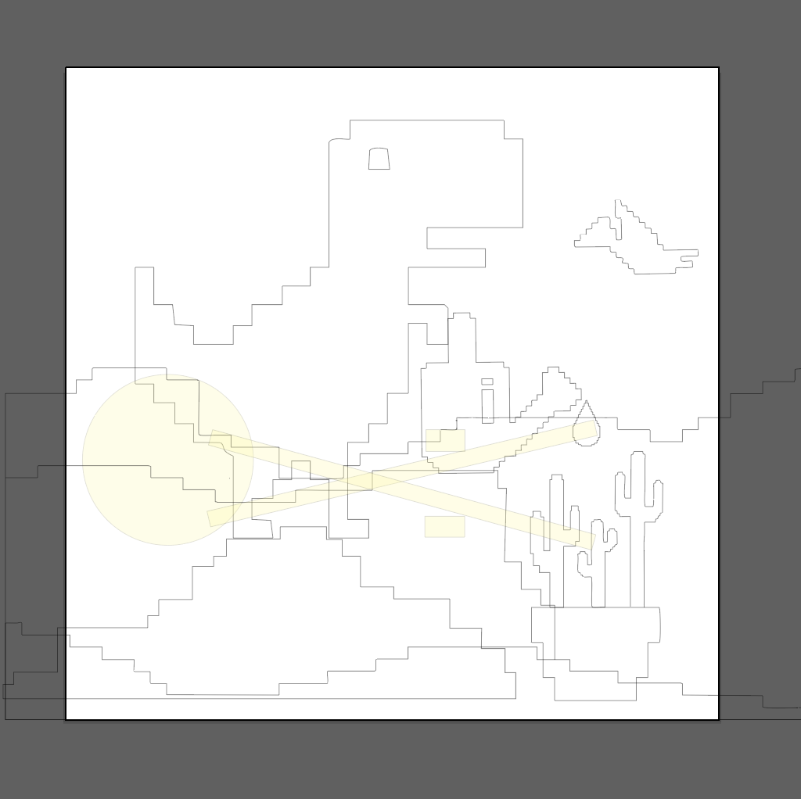
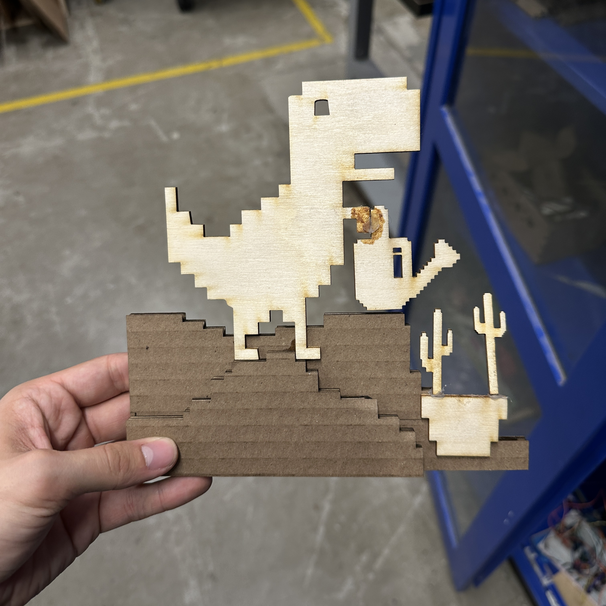
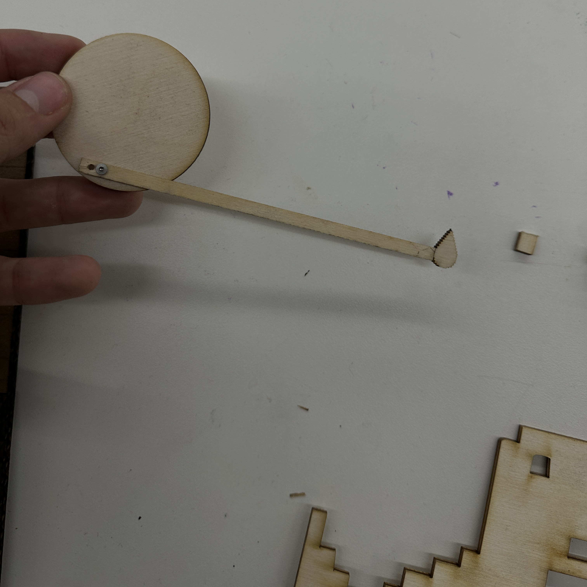

<div class="textcontainer">
<p class="margin"> </p>
<h3>Week 3: Hand Tools and Fabrication</h3>
<p class = "margin"></p>
<p class = "margin"></p>
<h4>Assignment: Kinetic Sculpture</h4>
<p class = "margin"></p>
<p> For this assignment, I decided to continue the thread of gardening, introducing a character that most of us know and love, the Google dinosaur.
Having an ample amount of experience with Adobe Illustrator, I wanted to see how well it would translate to a tool like the laser cutter, and fired it up
to create the blue print for my project. This was an interesting exercise for me because illustrator is definitely optimized for 2d projects.
In my blueprint below, I stacked each different element as I intended to upon completion of the project.
</p>
<p class = "margin"></p>
<p></p>
<p class = "margin"></p>
<p>
After exporting my file as a DXF, I had very little problems with the process of cutting (only a minor cardboard fire from too much detail in too
concentrated of a space). This prompted me to switch to wood for some of my pieces. Assemblage was almost exclusively hot glue or super glue. Here are some progress pics.
</p>
<p></p>
<p class = "margin"></p>
<p></p>
<p class = "margin"></p>
This was a fun one, and I hope that the broader themes of this sculpture can be appreciated, as the dinosaur
seems to be content growing what may one day come to kill him.
<p class = "margin"></p>
<video width="640" height="640" controls>
<source src="DinoVid.mp4" type="video/mp4">
</video>
<p class = "margin"></p>
<p class = "margin"></p>
</div>